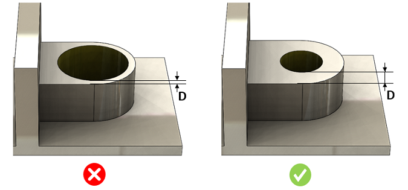

部品上の2つの面の間の最小厚さは、指定された値以上である必要があります。
積層造形プロセスでは、面間の厚さが小さすぎると、壁が弱くなり、製造中に崩壊したり変形したりする可能性があります。
造形方向に平行な面間の最小厚さは、0.2 mm以上である必要があります。
造形方向に対して傾斜している面間の最小厚さは、0.4 mm以上である必要があります。
平行度の許容値は15度に設定されています。面平面と造形方向との角度が±15度の許容範囲内であれば、その面は造形方向に平行であると見なされます。この許容範囲を超える場合、その面は造形方向に対して傾斜していると見なされます。
注記:
厚さは、造形方向に沿って2つの面の間で測定されます。

D = 面間の厚さ